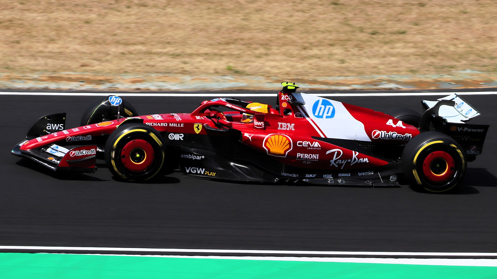
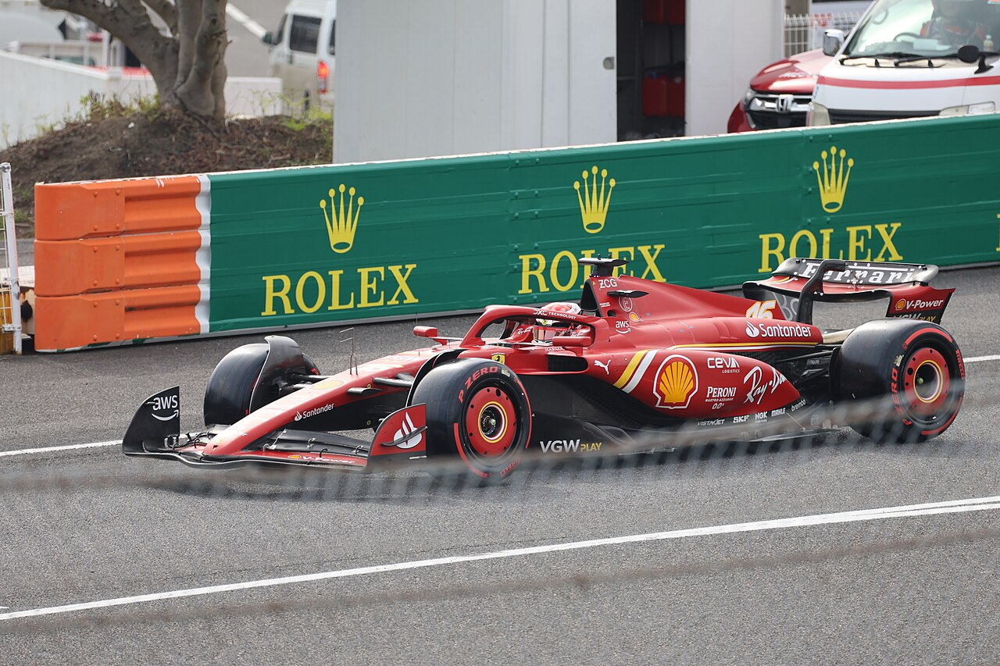

2026 Formula 1 Season
Welcome to Grid & Glory — a guide to the world's fastest motorsport. Whether you already follow every race or you are completely new to F1, this page explains the basics before you explore drivers, tracks, and teams.

Final Project · Berkay Gündoğdu · 2026 F1 Season
Welcome to Grid & Glory — a guide to the world's fastest motorsport. Whether you already follow every race or you are completely new to F1, this page explains the basics before you explore drivers, tracks, and teams.
Formula 1 — often called F1 — is the highest level of single-seater racing in the world. "Formula" means the cars must follow strict rules (a formula). "One" means it is the top category — faster and more advanced than Formula 2, Formula 3, or any other series.
Think of it like the Champions League of car racing. The best drivers, the best engineers, and the biggest manufacturers compete on famous tracks across the globe — from Monaco's city streets to Monza's long straights in Italy.
Each car is built for speed: open wheels (tyres outside the body), a single seat, wings front and rear for downforce, and a hybrid engine that combines petrol power with electric motors. In 2026, cars can reach over 300 km/h on the straights.
A Formula 1 event is called a Grand Prix (French for "big prize"). Most weekends follow the same pattern:
Some weekends also include a Sprint — a shorter race on Saturday that awards extra points, before the main race on Sunday.
There are two titles fought over every season:
Points are given to the top ten finishers in each race — from 25 points for first place down to 1 point for tenth. This means consistency matters: you do not have to win every race to win the title, but you cannot afford many bad weekends either.
The 2026 season brings the biggest rule change in years. New hybrid engines split power roughly 50/50 between petrol and electric. Active front and rear wings adjust automatically in corners and on straights.
Cadillac joins as the first new American team in decades. Audi replaces Sauber as a factory entry. The grid grows to 11 teams and 22 drivers, racing across 24 rounds on six continents.
Use the Featured Circuits bar at the top to explore Monaco, Monza, Spa, and other legendary tracks. Open the Drivers menu for full biographies of Verstappen, Hamilton, Leclerc, Norris, and Russell.
The Teams page shows every constructor with car photos and the full 2026 entry list. The History page covers more than 75 years of the sport, from the 1950 championship to today.


